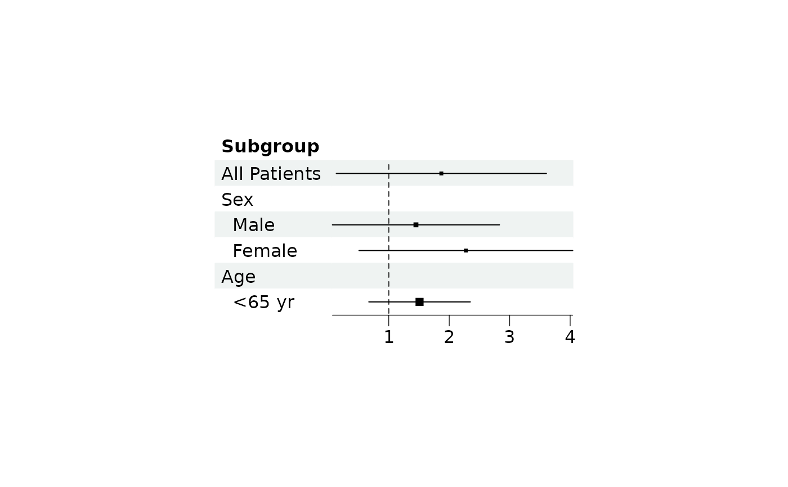

Read the sizes given to forest as study weights and
turn them into point sizes. The square root of the weights is taken first,
so that the area of each point is proportional to its weight, before
mapping onto range.
Arguments
- plot
A forest plot object, see
forest.- method
"range"(default) puts the smallest weight onrange[1]and the largest onrange[2], asmetafor::forest.rmadoes with itsplim."proportional"keeps the areas proportional to the weights and only clamps the smallest points up, asmeta::forest.metadoes.- range
Numeric vector of length 2 giving the smallest and largest point size, as a multiple of one line of text.
Details
Weights are scaled jointly across all groups and CI columns so that the
areas stay comparable between them; scale by hand if per-column control is
wanted. Rows flagged by is_summary are held out of the scaling and
drawn at range[2], since a pooled total is not comparable with a
study weight. This follows meta, whose pooled rows carry no study
weight and end up the size of the largest study square, and metafor,
which sizes its summary polygon from efac rather than from the
weights.
Each call sets both the method and the range, and method = NULL
turns the scaling off, so that sizes are used as they are.
Examples
library(grid)
# Read provided sample example data
dt <- read.csv(system.file("extdata", "example_data.csv", package = "forestploter"))
dt <- dt[1:6, ]
# Add a blank column for the forest plot to display CI
dt$` ` <- paste(rep(" ", 20), collapse = " ")
# The weight of each study, here the inverse of the width of the CI
weights <- 1/(dt$hi - dt$low)
p <- forest(dt[, c("Subgroup", " ")],
est = dt$est,
lower = dt$low,
upper = dt$hi,
sizes = weights, # weights, not sizes
ci_column = 2,
ref_line = 1)
# The area of each point is proportional to its weight
plot(scale_sizes(p, method = "range", range = c(0.2, 0.8)))
# `NULL` turns the scaling off, the values of `sizes` are then used as they are
plot(scale_sizes(p, method = NULL))
